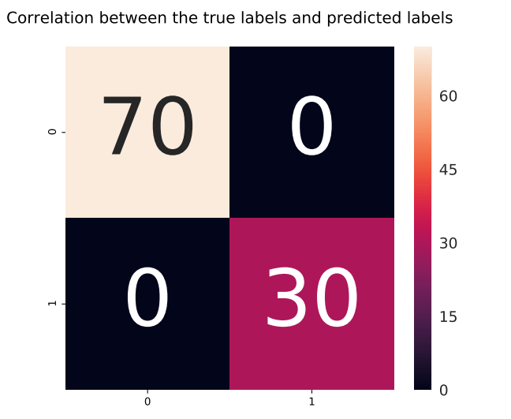
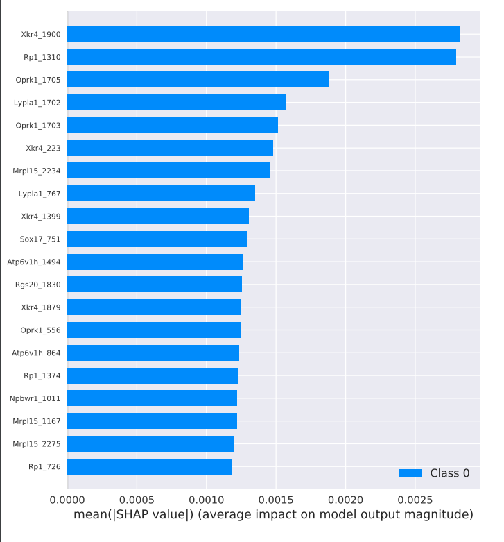

Example of MLP¶
MLP case uses a binary classification task as an example. The features data little_exp.tsv contains 100 samples and 23361 features. It may taks around ~5 minutes to finish this case.
> wc little_exp.tsv | awk '{print $1}' # rows
100
> sed -n '1,1p' little_exp.tsv | awk '{print NF}' # columns
23361
target data are of two types, 70 and 30 respectively.
> grep -c 0 little_learning_target.tsv
70
> grep -c 1 little_learning_target.tsv
30
First, prepare the configuration file, as shown below:
config.json in use¶
{
"name": "mlp_demo", // Project name
"model": {
"type": "MLP",
"args": {
"output_classes": 2} // Number of classes
},
"data_train": {
"type": "DataLoader",
"args":{
"data_dir": "/data_autogenome/data_test", //The folder where the data is located, it is recommended to use an absolute path
"features_file": "little_exp.tsv", //File of features
"labels_file": "little_learning_target.tsv", //File of target
"validation_split": 0.2, //Validation set ratio
"shuffle": true, //Whether to shuffle the data during training
"delimiter": " " //Delimiter in data, default: '\t'
}
},
"data_evaluate": {
"type": "DataLoader",
"args": {
"data_dir": "./data_autogenome/data_test",
"features_file": "little_exp.tsv", //用/File for evaluation
"labels_file": "little_learning_target.tsv", //target for evaluation
"delimiter": " "
}
},
"data_predict": {
"type": "DataLoader",
"args": {
"data_dir": "./data_autogenome/data_test",
"features_file": "little_exp.tsv", //File for prediction
"delimiter": " "
}
},
"input_fn": {
"num_threads": 16 //Number of threads for reading data
},
"trainer": {
"hyper_selector": true, //[true/false]，Whether to perform hyperparameter search
"batch_size": 64,
"save_dir": "./experiments", //Folder where logs, model parameters, and results are saved
"monitor": "accuracy", //[accuracy/loss/f1_score]，Evaluate metrics on the validation set during training
"num_gpus": 1,
"patience": 20, //After the number of consecutive epochs do not improve the performance on the validation set, stop training
"pre_train_epoch": 10, //The number of epochs trained in each group of parameters in Hyperparameter search phase
"max_steps": 64000, //Maximum running steps to train. When the patience is large, the max_steps steps will be trained. Max_steps * batch_size / num_samples is the number of epochs corresponding to the training.
"loss": "cross_entropy",
"selected_mode": "max" //[max/min]Bigger or smaller is better when evaluation
},
"optimizer": {
"type": "adam" //[adam/sgd/adadelta/adagrad/adamw/ftrl/momentum/rmsprop/kfac/dynamic_momentum/lamb]
},
"evaluator": {
"max_number_of_steps": 1,
"batch_size":100
},
"predictor": {
"max_number_of_steps": 1,
"batch_size":100
},
"explainer": {
"type": "Shap",
"args": {
"plot_type": "bar", //[bar/dot/violin/layered_violin]
"features_name_file": "/data_autogenome/data_test/names_2.txt", //变File of feature name ，one column，rows are equall to the number of features
"num_samples": 80, //Number of sample used in explainer
"ranked_outputs": 20 //Number of important variables will be ploted
}
},
"param_spec": { //Initial parameters
"type": "origin_params",
"args": {
"MLP": {
"layers_list": [64， 128],
"keep_prob": 1,
"output_nonlinear": "sigmoid"
},
"optimizer_param": {
"learning_rate": 0.0001
}
}
},
"hyper_param_spec": { //Hyperparameter search space
"type": "hyper_params",
"args": {
"MLP": {
"size_candidates": [128, 64], //Search space for Nodes at each layer
"num_layers": [2, 3],
"keep_prob": [0.8, 1.0],
"output_nonlinear": [null, "relu", "tanh", "sigmoid"]
},
"optimizer_param": {
}
}
}
}
Step by step¶
The use of AutoGenome mainly includes the following steps:
import autogenome
import autogenome as ag
Load the configuration file, as shown above
automl = ag.auto("/data_autogenome/data_test/json_hub_simple/densenet_test.json")
After the configuration file is successfully read, the following log is printed:
========================================================== ----------Use the config from /data_autogenome/data_test/json_hub_simple/mlp_test.json ----------Initialize data_loader class ----------Initialize Optimizer ----------Initialize hyper_param_spec class ----------Initialize param_spec class ========================================================== ################################################################################# # # # # Ready to search the best hyper parameters for MLP model # # # # #################################################################################Train the model. Model training is performed according to the parameters in the configuration file. Data set is divided into training set : validation set in ratio of 8: 2. The training set data is used for training, and the validation set data is used for the evaluation performance of temporary searched model in real-time. High performance models and parameters are saved to the
modelsfolder in the corresponding folder (trainer.saver:” ./experiments “)automl.train()
During training, the model is initialized to the parameters in
param_spec, and then the parameter search is performed in the hyper-parameter search spacehyper_param_spec. Each parameter combination will train a certain number of epochs (trainer.pre_train_epoch). After hyper-parameter search, parameters of the final model is fixed. And then the final model will be trained again, to achieve a higher performance. The parameters of the final model are saved for further load.Parts of logs during training are as follows:
----------In Hyper & Training Search stage ... Pretraining: search parameter is layers_list, search value is (128, 64) LR_RANGE_TEST From begin_lr 0.000010 To end_lr 0.100000, Graph was finalized. Running local_init_op. Done running local_init_op. Running will end at step: 10 step: 0(global step: 0) sample/sec: 218.444 loss: 0.805 accuracy: 0.484 ... The model and events are saved in experiments/models/mlp_demo/1225_113835/hyper_lr0.08500150000000001_layers_list_(128128)_keep_prob_0.8_output_nonlinear_None Graph was finalized. Running local_init_op. Done running local_init_op. Running will end at step: 64000 step: 0(global step: 0) sample/sec: 86.607 loss: 0.843 accuracy: 0.531 [Plateau Metric] step: 1 loss: 147.601 accuracy: 0.266 Saving checkpoints for 2 into experiments/models/mlp_demo/1225_113835/hyper_lr0.08500150000000001_layers_list_(128128)_keep_prob_0.8_output_nonlinear_None/best_model.ckpt. [Plateau Metric] step: 3 loss: 64.228 accuracy: 0.266 [Plateau Metric] step: 5 loss: 67.668 accuracy: 0.328 Saving checkpoints for 6 into experiments/models/mlp_demo/1225_113835/hyper_lr0.08500150000000001_layers_list_(128128)_keep_prob_0.8_output_nonlinear_None/best_model.ckpt. [Plateau Metric] step: 7 loss: 122.216 accuracy: 0.328 ... step: 200(global step: 200) sample/sec: 4496.934 loss: 0.000 accuracy: 1.000 [Plateau Metric] step: 201 loss: 0.046 accuracy: 0.953 [Plateau Metric] step: 203 loss: 0.034 accuracy: 0.953 [Plateau Metric] step: 205 loss: 0.025 accuracy: 1.000 Saving checkpoints for 206 into experiments/models/mlp_demo/1225_113835/hyper_lr0.08500150000000001_layers_list_(128128)_keep_prob_0.8_output_nonlinear_None/best_model.ckpt. [Plateau Metric] step: 207 loss: 0.036 accuracy: 1.000 ...
Evaluation. Evaluate the performance of final model on data specified on
data_evaluate. Classification task model will output the accuracy and the confusion matrix.automl.evaluate()
Parts of logs are as follows:
----------In Evaluation stage Restoring parameters from experiments/models/mlp_demo/1225_113835/hyper_lr0.08500150000000001_layers_list_(128128)_keep_prob_0.8_output_nonlinear_None/best_model.ckpt-206 Running local_init_op. Done running local_init_op. loss: 0.005278169643133879 accuracy: 1.0 [1 batches] Confusion matrix plot is 'experiments/output_files/mlp_demo/1225_113835/MLP_confusion_matrix.pdf'
The confusion matrix is shown below. Size of the figure will adjust to the number of categories. The x-axis is true label and the y-axis is the predicted label.

Prediction. Given input sample data, predict categories based on the final model trained in step 3. The category and softmax value of each sample will be saved in a csv file.
automl.predict()
Part of logs are as follows:
----------In Prediction stage Restoring parameters from experiments/models/mlp_demo/1225_113835/hyper_lr0.08500150000000001_layers_list_(128128)_keep_prob_0.8_output_nonlinear_None/best_model.ckpt-206 Running local_init_op. Done running local_init_op. [1 batches] Predicted values file is "experiments/output_files/mlp_demo/1225_113835/MLP_predicted_result_data_frame.csv"
As shown in the log, the predicted csv file will be produced and saved. The first column of the file is
predicted_result, and the second column ofsoftmax_valueis the softmax value of each sample.Explanation. Rank the importance of the features according to the final model trained in step 3 . The file corresponding to the variable name needs to be specified in the
explainer.automl.explain()
Rank the importance of the model variables, and the log is as follows:
----------Initialize Shap class Restoring parameters from experiments/models/mlp_demo/1225_113835/hyper_lr0.08500150000000001_layers_list_(128128)_keep_prob_0.8_output_nonlinear_None/best_model.ckpt-206 ----------Computing shap_values with 80 examples and 23361 features importance plot is 'experiments/output_files/mlp_demo/1225_113835/_dot0_feature_importance_summary.pdf' importance plot is 'experiments/output_files/mlp_demo/1225_113835/_dot1_feature_importance_summary.pdf' features orders in all classes is saved in 'experiments/output_files/mlp_demo/1225_113835/_features_orders.csv' importance plot for every classes is 'experiments/output_files/mlp_demo/1225_113835/class_0feature_importance_summary.pdf' importance plot for every classes is 'experiments/output_files/mlp_demo/1225_113835/class_1feature_importance_summary.pdf' importance plot is 'experiments/output_files/mlp_demo/1225_113835/_barTotal_feature_importance_summary.pdf' shap_values every classes is 'experiments/output_files/mlp_demo/1225_113835/_class_0shap_values.csv' shap_values every classes is 'experiments/output_files/mlp_demo/1225_113835/_class_1shap_values.csv'
Variable importance bar charts and dot charts and total variable importance charts for each category are produced, as shown below:
Importance map for all variable：

Features importance bar plot for class1:

Features importance bar plot for class0:

Features importance dot plot for class1:

Features importance dot plot for class0: